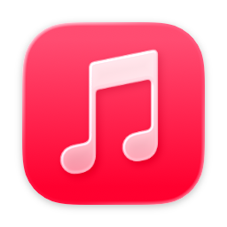

Press play.The right thing pauses.
SmartPause is a free macOS menu bar app that sends the play/pause key to the app that is actually making sound. Not to whatever your Mac remembers.
Scroll to press the key
Today, the key goes to whatever your Mac remembers.
You're watching YouTube. You press play/pause. The video keeps going and Apple Music opens. macOS routes media keys to its idea of "Now Playing", which is often stale and sometimes nothing at all.

Apple Musicopens by itselfWith SmartPause, it goes to what is actually playing.
On every press SmartPause asks Core Audio which process is outputting sound right now, then sends the command to that app. Apple Music stays closed. If nothing is playing, the last thing you paused resumes.
Two apps playing? One key still works.
A single press switches: the playing app pauses, the other one starts, and it moves to the top. A double press plays or pauses the selected app. The widget at the top right shows what happened and what the next press will do.
Small, honest, yours.
- One permission. Accessibility, to hear the media keys. No microphone, no screen recording.
- Zero cost when idle. Audio detection uses Core Audio's public process list and runs only when you press a key.
- Never a dead key. Apps without an adapter get the key handed back to the system, untouched.
- Open source, MIT. Swift, no analytics, no accounts. Read every line.
Works with Spotify, Apple Music, VLC, Chrome, Brave and Safari. English and Turkish.
Install in a minute.
brew install --cask yasinozmeen/smartpause/smartpause
or download the zip. macOS 14.2 or newer, Apple Silicon or Intel.
First launch asks for the Accessibility permission. That's the whole setup.
Free, and staying free. If it fixed a daily annoyance, buy me a coffee; it goes toward the Apple Developer ID so the app can be notarized.